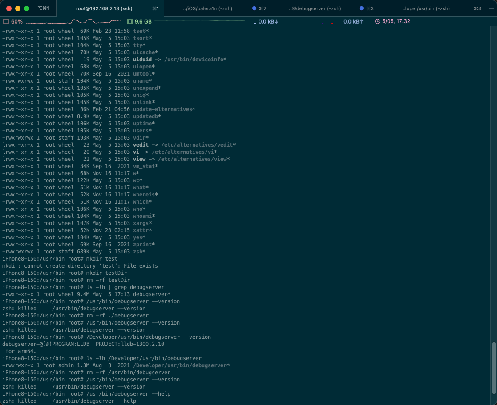
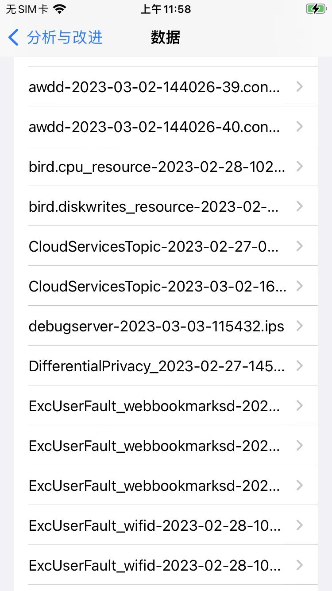
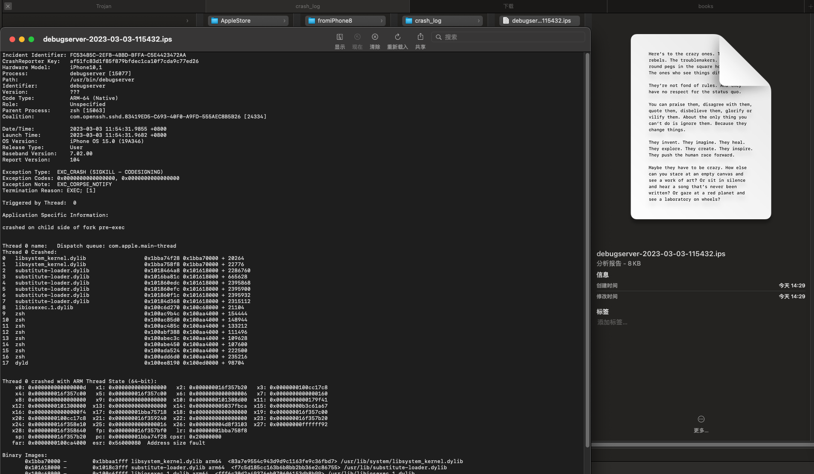
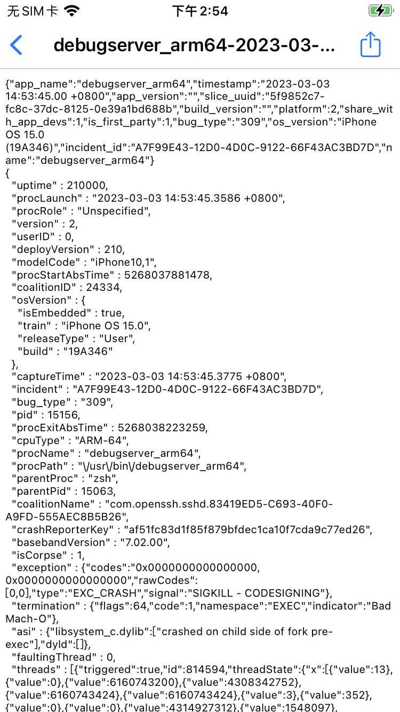

运行崩溃killed
重签名后的debugserver运行崩溃：killed
现象
表面现象
之前用：
ldid -Sdebugable_entitlement.xml debugserver_debugable
给debugserver重签名，加上了额外的可以被调试的权限。
注：此方法，之前在iOS 14中，是有效的。
但是此处iOS 15中，报错了：运行崩溃killed
iPhone8-150:/Developer/usr/bin root# debugserver --version
zsh: killed debugserver --version
iPhone8-150:/usr/bin root# /usr/bin/debugserver --help
zsh: killed /usr/bin/debugserver --help

深层次现象
debugserver的崩溃日志.ips文件：
崩溃日志1

可以看到具体崩溃原因是：

Incident Identifier: FC53485C-2EFB-4BBD-BFFA-C5E4423472AA
CrashReporter Key: af51fc83d1f85f879bfdec1ca10f7cda9c77ed26
Hardware Model: iPhone10,1
Process: debugserver [15077]
Path: /usr/bin/debugserver
Identifier: debugserver
Version: ???
Code Type: ARM-64 (Native)
Role: Unspecified
Parent Process: zsh [15063]
Coalition: com.openssh.sshd.83419ED5-C693-40F0-A9FD-555AEC8B5B26 [24334]
Date/Time: 2023-03-03 11:54:31.9855 +0800
Launch Time: 2023-03-03 11:54:31.9682 +0800
OS Version: iPhone OS 15.0 (19A346)
Release Type: User
Baseband Version: 7.02.00
Report Version: 104
Exception Type: EXC_CRASH (SIGKILL - CODESIGNING)
Exception Codes: 0x0000000000000000, 0x0000000000000000
Exception Note: EXC_CORPSE_NOTIFY
Termination Reason: EXEC; [1]
Triggered by Thread: 0
Application Specific Information:
crashed on child side of fork pre-exec
Thread 0 name: Dispatch queue: com.apple.main-thread
Thread 0 Crashed:
0 libsystem_kernel.dylib 0x1bba74f28 0x1bba70000 + 20264
1 libsystem_kernel.dylib 0x1bba758f8 0x1bba70000 + 22776
2 substitute-loader.dylib 0x1018464a8 0x101618000 + 2286760
3 substitute-loader.dylib 0x1016ba81c 0x101618000 + 665628
4 substitute-loader.dylib 0x101860edc 0x101618000 + 2395868
5 substitute-loader.dylib 0x101860efc 0x101618000 + 2395900
6 substitute-loader.dylib 0x101860f1c 0x101618000 + 2395932
7 substitute-loader.dylib 0x10184d368 0x101618000 + 2315112
8 libiosexec.1.dylib 0x100c6d270 0x100c68000 + 21104
9 zsh 0x100ac9b4c 0x100aa4000 + 154444
10 zsh 0x100ac85d0 0x100aa4000 + 148944
11 zsh 0x100ac485c 0x100aa4000 + 133212
12 zsh 0x100abf388 0x100aa4000 + 111496
13 zsh 0x100abec3c 0x100aa4000 + 109628
14 zsh 0x100abe450 0x100aa4000 + 107600
15 zsh 0x100ada524 0x100aa4000 + 222500
16 zsh 0x100add6d0 0x100aa4000 + 235216
17 dyld 0x100ee8190 0x100ed0000 + 98704
Thread 0 crashed with ARM Thread State (64-bit):
x0: 0x000000000000000d x1: 0x0000000000000000 x2: 0x000000016f357b20 x3: 0x0000000100cc17c8
x4: 0x000000016f357c00 x5: 0x000000016f357c00 x6: 0x0000000000000006 x7: 0x0000000000000160
x8: 0x0000000000000000 x9: 0x0000000000000000 x10: 0x0000000101308d00 x11: 0x0000000000179f41
x12: 0x0000000101300000 x13: 0x0000000000000000 x14: 0x000000005037fbca x15: 0x00000000b3c61a67
x16: 0x00000000000000f4 x17: 0x00000001bba75718 x18: 0x0000000000000000 x19: 0x000000016f357c00
x20: 0x0000000100cc17c8 x21: 0x000000016f359240 x22: 0x0000000000000000 x23: 0x000000016f357b20
x24: 0x000000016f358e10 x25: 0x0000000000000016 x26: 0x000000004d8f3103 x27: 0x00000000ffffff92
x28: 0x000000016f358640 fp: 0x000000016f357bf0 lr: 0x00000001bba758f8
sp: 0x000000016f357b20 pc: 0x00000001bba74f28 cpsr: 0x20000000
far: 0x0000000100ca4000 esr: 0x56000080 Address size fault
Binary Images:
0x1bba70000 - 0x1bbaa1fff libsystem_kernel.dylib arm64 <83a7e9554c943d9d9c1163fe9c36fbd7> /usr/lib/system/libsystem_kernel.dylib
0x101618000 - 0x1018c3fff substitute-loader.dylib arm64 <f7c5d185cc163b6b8bb2bb36e2c86755> /usr/lib/substitute-loader.dylib
0x100c68000 - 0x100c6ffff libiosexec.1.dylib arm64 <fff6c30d2a49376eb070606153db8b99> /usr/lib/libiosexec.1.dylib
0x100aa4000 - 0x100b33fff zsh arm64 <5f9852c7fc8c37dc81250e39a1bd688b> /usr/bin/zsh
0x100ed0000 - 0x100f23fff dyld arm64 <d7a0282e93de3a1e981327e84517cc96> /usr/lib/dyld
EOF
其中的Exception Type: EXC_CRASH (SIGKILL - CODESIGNING)能看出是：代码签名方面的问题
崩溃日志2

"exception" : {"codes":"0x0000000000000000, 0x0000000000000000","rawCodes":[0,0],"type":"EXC_CRASH","signal":"SIGKILL - CODESIGNING"},
"termination" : {"flags":64,"code":1,"namespace":"EXEC","indicator":"Bad Mach-O"},
"asi" : {"libsystem_c.dylib":["crashed on child side of fork pre-exec"],"dyld":[]},
其中的：
"signal":"SIGKILL - CODESIGNING"}：确定是：代码签名方面的问题，导致的崩溃"indicator":"Bad Mach-O"：具体指示器 ~= 出错的地方/来源：是由于Bad Mach-O=Mach-O二进制文件是坏的- 后续证明：是签名方面有问题 -》所以是：坏的Mach-O文件
原因
iOS <15时的旧的重签名的方式=ldid重签名，不满足此处（arm64的A11的iPhone8，iOS 15.0）新的iOS 15+的要求
解决办法
用codesign重新签名
具体步骤
- 概述
codesign -f -s - --entitlements debugable_entitlement.xml debugserver - 详解